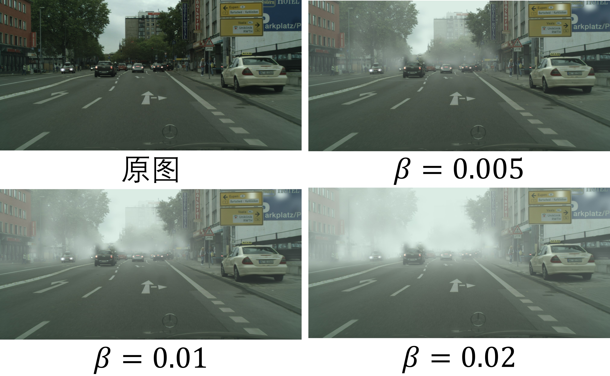
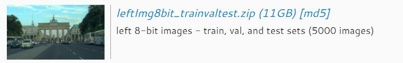
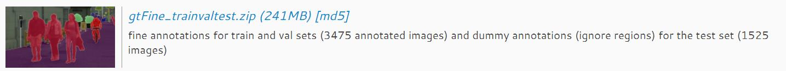
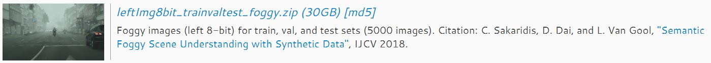

域适应目标检测数据集汇总¶
Cityscapes与Foggy Cityscapes¶
数据集介绍¶
Cityscapes为无人驾驶环境下的语义分割数据集，用于评估视觉算法在城市场景下语义理解方面的性能，共包含3475张训练集、500张验证集、1525张测试集。
Cityscapes数据集更详细的讲解地址可参考：
- https://github.com/mcordts/cityscapesScripts
- https://blog.csdn.net/zz2230633069/article/details/84591532
Foggy Cityscapes由论文《Semantic Foggy Scene Understanding with Synthetic Data》提出(论文链接)，与Cityscapes数据相比场景以及内容均相同，仅仅增加了雾化效果，因此可以共享一个标签。
Cityscapes中1张图片对应Foggy Cityscapes中3张图片，每张图片对应一个\beta值，\beta分别为0.005、0.01、0.02，具体可参考论文中Foggy Cityscapes的合成方法。

Cityscapes相当于晴天数据，Foggy Cityscapes相当于雾天数据，由于两个数据集仅在天气情况上具有差异，因此两个数据集的组合常用于域适应方向的研究。
下载地址¶
官方下载地址：https://www.cityscapes-dataset.com/downloads
Cityscapes图片数据

Cityscapes标签数据

标签为语义分割格式的标签，如果用于目标检测的话，需要进一步做转换
Foggy Cityscapes图片数据

将标签转化为xml格式¶
将原始的语义分割标签转化为目标检测标签，注意这里将train作为训练集，将val作为验证集，将test舍弃(无标签，无法验证)
参数初始化
# 导入使用到的库
from pascal_voc_writer import Writer
import matplotlib.pyplot as plt
import numpy as np
import os
import json
import glob
import time
from shutil import move, copy
# 图片数据根目录，即leftImg8bit文件所在的目录
cityscapes_dir = '.'
# VOC标签存储目录
save_path = './cityscapes_voc_annotations/'
# 标签目录，这里将leftImg8bit文件与gtFine文件放至同一目录下
cityscapes_dir_gt = os.path.join(cityscapes_dir, 'gtFine')
# 创建字典格式数据，键为原始标签的label名称，值为期望的VOC格式label名称
# 得到期望提取的类别，一般域适应目标检测中，只提取如下八类
classes = {'bicycle':'bicycle', 'bus':'bus', 'car':'car', 'motorcycle':'mcycle',
'person':'person', 'rider': 'rider', 'train':'train', 'truck':'truck'}
classes_keys = list(classes.keys())
创建目录的函数
def make_dir(path):
# 首先判断是否存在目录
if not os.path.isdir(path):
os.makedirs(path)
将多边形转化为矩形边界框
# 利用矩形将不规则形状框起来
def polygon_to_bbox(polygon):
x_coordinates, y_coordinates = zip(*polygon)
# 得到坐标的最值，即对应边界框两个坐标点
return [min(x_coordinates), min(y_coordinates), max(x_coordinates), max(y_coordinates)]
得到VOC标签信息
读取原始标签json，计算得到对象类别以及边界框坐标
def read_json(file):
# 用于判断图像中是否有期望的类别(即上面定义的classes)
# 如果没有期望的类别，则不对该图像生成xml文件
relevant_file = False
data = []
with open(file, 'r') as f:
# 加载json文件
file_data = json.load(f)
# 遍历图像中所有的物体
for object in file_data['objects']:
# 得到类别标签和多边形坐标点
label, polygon = object['label'], object['polygon']
# 当物体类别与期望存储的类别一致时，才将该数据存储下来
if label in classes_keys:
# 转换数据类型，转换为numpy格式
polygon = np.array([x for x in polygon])
# 得到边界框坐标
bbox = polygon_to_bbox(polygon)
# 存储物体类别以及边界框
data.append([classes[label]]+bbox)
# 如果在图像中找到相关的对象，将标志设置为True，表示生成xml文件
if data:
relevant_file = True
return data, relevant_file
为图片创建xml文件
def save_xml(img_path, img_shape, data, save_path):
# 初始化类
writer = Writer(img_path,img_shape[0], img_shape[1])
# 遍历data，写入数据
for element in data:
writer.addObject(element[0],element[1],element[2],element[3],element[4])
# 保存xml
writer.save(save_path)
主程序
生成Annotations文件，即存有xml标签信息的文件
# 初始化三个储存路径的变量
# 有效的图片，即所有用于训练和验证的图片
valid_files = []
# 用于训练的图片
trainval_files = []
# 用于测试的图片
test_files = []
# VOC根目录
ann_dir = os.path.join(save_path, 'VOC2007','Annotations')
# 如果目标目录不存在，则创建目录
make_dir(ann_dir)
start = time.time()
# 按train、val、test遍历
for category in os.listdir(cityscapes_dir_gt):
# 不为test数据生成标签
if category == 'test': continue
# 遍历城市信息
for city in os.listdir(os.path.join(cityscapes_dir_gt, category)):
# 得到所有的json文件路径，返回一个可遍历的变量
files = glob.glob(os.path.join(cityscapes_dir, 'gtFine', category, city)+'/*.json')
# 遍历所有json文件路径
for file in files:
# 返回得到的图片标签数据，以及判断该图片是否含有期望的类别对象
data, relevant_file = read_json(file)
# 如果该图有期望的物体，则创建xml文件
# 这里也可以通过判断data是否非空实现
if relevant_file:
# 得到图片标签
base_filename = os.path.basename(file)[:-21]
# 通过合并，得到xml存储路径
xml_filepath = os.path.join(ann_dir, base_filename + '_leftImg8bit.xml')
# 得到图片名称
img_name = base_filename+'_leftImg8bit.png'
# 得到图片路径
img_path = os.path.join(cityscapes_dir, 'leftImg8bit', category, city, base_filename+'_leftImg8bit.png')
# 读取图片，之后得到图片尺寸
img_shape = plt.imread(img_path).shape
# 保存所有图片的路径(训练+验证)
valid_files.append([img_path, img_name])
# 保存训练集与验证集，这里分别得到两个变量
trainval_files.append(img_name[:-4]) if category == 'train' else test_files.append(img_name[:-4])
# 保存xml格式的标签x
save_xml(img_path, img_shape, data, xml_filepath)
else:
print(file)
end = time.time() - start
print('Total Time taken: ', end)
生成JPEGImages文件，即存有所有图片的文件
注意：由于期望提取的类别可能不是原数据集中所有的类别，因此最终得到的图片可能会少于2975+500=3475张，若按上述八种类别提取的话，最后会得到2965+492=3457张图片
# 创建目录
images_savepath = os.path.join(save_path, 'VOC2007', 'JPEGImages')
make_dir(images_savepath)
start = time.time()
# 遍历之前得到的图片路径
for file in valid_files:
# 复制图片
copy(file[0], os.path.join(images_savepath, file[1]))
end = time.time() - start
print('Total Time taken: ', end)
生成ImageSets文件，即存有划分训练集和验证集信息的文件
# 创建目录
textfiles_savepath = os.path.join(save_path, 'VOC2007', 'ImageSets', 'Main')
make_dir(textfiles_savepath)
trainval_files_wr = [x + '\n' for x in trainval_files]
test_files_wr = [x + '\n' for x in test_files]
# 分别变量，并且写入txt文件
with open(os.path.join(textfiles_savepath, 'trainval.txt'), 'w') as f:
f.writelines(trainval_files_wr)
with open(os.path.join(textfiles_savepath, 'test.txt'), 'w') as f:
f.writelines(test_files_wr)
最后一次修改日期：2022年2月6日